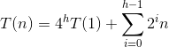
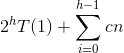
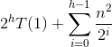

What is this?
Merge sort recurrence:

We "solve" these by finding a closed-form equation that
describes the recurrence but without recursion.
Solution: T(n) = Θ(n lg n)
Methods:
Technicalities
We often omit floors, ceilings, and boundary conditions. For
instance, if n is odd, we may say n / 2 anyway.

Only makes since in an array with both negative and positive
values: otherwise the answer is either the whole array or the
maximum member.
Try every combination of two elements!
A n choose 2 problem, so order of Ω(n2).
n choose 2 will be about 1/2 n2, since it equals
n(n - 1) / 2. So we can establish a lower bound by setting c =
1/3, for instance, and n choose 2 will always be bounded from
below by c*n2.
We look at the problem differently: let's find the nonempty, contiguous subarray of our array whose values have the largest sum. We call this the maximum subarray.
To solve this problem, we divide an array A into three subarrays, and ask what is the maximum subarray in each:
Problems 1 and 3 are simply this same problem on a smaller array!
Problem 2 can be solved by finding the maximum subarrays in
low-to-mid and in mid+1-to-high.
The recurrence is the same as for merge sort.
In the console below, type or paste:
!git clone https://gist.github.com/25ffc0600a866535adef05c5d8eca34a.git
cd 25ffc0600a866535adef05c5d8eca34a
from find_max_subarray import *
A = [13, -3, -25, 20, -3, -16, -23, 18, 20, -7, 12, -5, -22, 15, -4, 7]
To run the example from the textbook, type:
A
find_max_subarray(A, 0, 15)
Now you can experiment with the algorithm by typing in your own array (my_array = [x, y, z]) and running find_max_array(my_array).
1. c; 2. b; 3. b;
We divide each of our initial matrices into four
sub-matrices, and multiply them. Which we do by dividing
each of them into four...
In the base case when each matrix has only one member, we
just multiply them and return the result.
So what is our recurrence? Each step except the base case
multiplies eight matrices of size n / 2. So they
contribute 8T(n / 2) to running time. There are also four
matrix additions of matrices containing n2 / 4
entries -- squared because n specifies an n x n matrix. So
this contributes Θ(n2) time.
So our recurrence is:

The master method will show us that the solution to this
recurrence is:
T(n) = Θ(n3)
In the console below, type or paste:
!git clone https://gist.github.com/87e1f86c634c1538062041ca153bc466.git
cd 87e1f86c634c1538062041ca153bc466
from divide_conquer_matrix import *
A = [[1, 3], [7, 5]]
B = [[6, 8], [4, 2]]
To run the example from the textbook, type:
A,B
square_matrix_multiply(A, B)
square_matrix_multiply_recursive(A, B)
Now you can experiment with the algorithm by typing in your own Matrix (my_matrix = [x, y, z]) and running square_matrix_multiply(a_matrix, b_matrix) or square_matrix_multiply_recursive(a_matrix, b_matrix).

By adding ten additions, we can cut the divide portion of
our algorithm down to seven multiplications instead of
eight.
Let's try one!
Here is the method:
For two matrices:

Define:
P1 = A(F - H)
P2 = H(A + B)
P3 = E(C + D)
P4 = D(G - E)
P5 = (A + D) * (E + H)
P6 = (B - D) * (G + H)
P7 = (A - C) * (E + F)
Then:

So let's try this example:

Important Lesson
There are often serious trade-offs between set-up time and
aymptotic run-time. One must carefully consider how large
one's inputs are likely to be before opting for a complex
algorithm like Strassen's. On modern hardware optimized for
matrix multiplication, matrix sizes often need to be in the
thousands before Strassen's algorithm yields significant
gains.
Note: I am presenting these three methods in my notes in textbook order. But in lectures, I present the substitution method last, because we can best make sense of our "guess" for a solution if we understand the other two methods first. I suggest students tackle recursion-tree, then master method, and then substitution.
Shared web material located here.
Let's look at the recurrence:
T(n) = T(n/3) + T(2n/3) + n
T(0) = 1
T(1) = 1
This does not have the form the master method
requires. And if we sketch a recursion tree, not every
node is the same on a level, so it is different from
what we usually deal with there. But if we do
diagram a recursion tree, we will see that the work
looks constant at each level, like a master theorem
case 2. And since the function part of the equation is
f(n) = n, let's "guess":
T(n) ≤ cn log n
But that is just our hunch: we have to prove it!
Let's look at base cases for our inductive proof.
Use floors for divisions! Is:
How many base cases do we need to examine? We will see!
But we can prove it for any given "small" n > 2 by
setting:
c ≥ T(n) / n log n
Recursion step:
We assume that for k where:
2 ≤ k < n
the claim is true.
Now, we need to show that if for sub-problems smaller
than n the claim is true, then it is true for n.
There are two ways to use this method:
Analyze the tree:

Calculate the work at each level:

This produces the geometric series:

If we set a = n2 and r = 1/2, then we have the
general sum of a converging geometric series:

So the solution here is O(n2). The amount of work at
each level is reduced by a power of two, and so is
just a constant factor times the root.
Consider these three examples:
(We assume c > 0.)
Let's break down these cases:
| T(n) = 4T(n/2) + cn1 | |||
|---|---|---|---|
| Level | # Nodes |
Work at
Node |
Work at
Level |
| 0 | 1 | n | n |
| 1 | 4 | n/2 | 2n |
| 2 | 16 | n/4 | 4n |
| 3 | 64 | n/8 | 8n |
| i | 4i | n/2i | 2in |
|
h =
log2n |
4h | T(1) | 4hT(1) |
The runtime then is:

h = log2n
so the first part equals:
4log2n = nlog24
We pull out the n from the sum and it is
an increasing geometric series that evaluates to n - 1.
So the closed form for the recurrence is:
n2T(1) + n(n - 1)
The very last level dominates, as it already has O(n2)
complexity.
| T(n) = 2T(n/2) + cn1 | |||
|---|---|---|---|
| Level | # Nodes |
Equ. for
Node |
Work |
| 0 | 1 | n | cn |
| 1 | 2 | n/2 | cn |
| 2 | 4 | n/4 | cn |
| 3 | 8 | n/8 | cn |
| i | 2i | n/2i | cn |
|
h =
log2n |
2h | T(1) | 2hT(1) |
And so we get:

2h = n.
The sum happens log n times, so we have cn * log n.
n + n log n
All levels contributed equally.
| T(n) = 2T(n/2) + cn2 | |||
|---|---|---|---|
| Level | # Nodes |
Equ. for
Node |
Work |
| 0 | 1 | n2 | n2 |
| 1 | 2 | (n/2)2 | n2/2 |
| 2 | 4 | (n/4)2 | n2/4 |
| 3 | 8 | (n/8)2 | n2/8 |
| i | 2i | (n/2i)2 | n2/2i |
|
h =
log2n |
2h | T(1) | 2hT(1) |
The runtime then is:

We pull out the n2 from the sum, and we get a
geometric series. Obviously, n2 dominates.
And it is the same as the top level.
These all have the form: T(n) = aT(n / b) + f(n).
When we work these out, we see that in our 3 cases:
This observation leads us to:
Form: T(n) = aT(n / b) + f(n).
Where a ≥ 1 and b > 1 and f(n) asymptotically positive.
Three cases
Compare nlogba and f(n):
Restrictions:
1. d; 2. b; 3. c;
On NYU Classes.